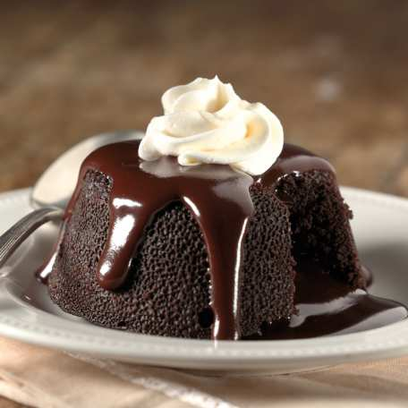

CHOCO LAVA CAKE
- To prepare this easy chocolate cake recipe, pre-heat the oven to 180°C.
Meanwhile, grease and line a 7 inch round cake tin with baking paper.
Now, sieve together the flour, cocoa powder and baking powder. Once it is done, keep the dry ingredients aside.
- Take a glass bowl and mix butter and sugar into it.
Beat these ingredients till light and fluffy. Make sure that the sugar has dissolved.
Now, beat in two eggs at a time allowing at least two minutes gap between each addition. Lightly fold in the flour into the mixture.
Pour the batter into the prepared tins and bake for 35 to 40 mins.
- Check the doneness by inserting a toothpick into the center, if it comes out clean, then the cake is done.
Transfer the cake onto a wire rack and allow it to cool completely. Serve with vanilla ice-cream to enhance the flavour.
If you want to give this chocolate cake a fancy look, then you may decorate it with fruits, whipped cream and cherries.